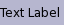
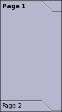
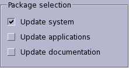
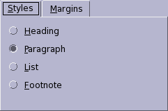
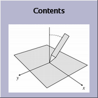
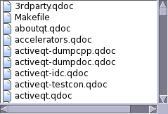
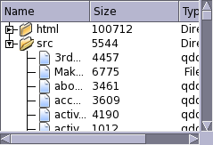
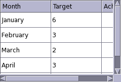
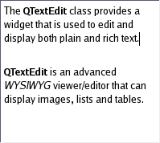

| Home · All Classes · Main Classes · Grouped Classes · Modules · Functions |
This page shows some of the widgets available in Qt when configured to use the "cde" style.
| QProgressBar The QProgressBar widget provides a horizontal progress bar. | |
| QLCDNumber The QLCDNumber widget displays a number with LCD-like digits. | |
 | QLabel The QLabel widget provides a text or image display. |
| QPushButton The QPushButton widget provides a command button. | |
| QToolButton The QToolButton class provides a quick-access button to commands or options, usually used inside a QToolBar. | |
| QCheckBox The QCheckBox widget provides a checkbox with a text label. | |
| QRadioButton The QRadioButton widget provides a radio button with a text or pixmap label. |
 | QToolBox The QToolBox class provides a column of tabbed widget items. |
 | QGroupBox The QGroupBox widget provides a group box frame with a title. |
 | QTabWidget The QTabWidget class provides a stack of tabbed widgets. |
 | QFrame The QFrame widget provides a simple decorated container for other widgets. |
 | QListView The QListView class provides a default model/view implementation of a list/icon view. The QListWidget class provides a classic item-based list/icon view. |
 | QTreeView The QTreeView class provides a default model/view implementation of a tree view. The QTreeWidget class provides a classic item-based tree view. |
 | QTableView The QTableView class provides a default model/view implementation of a table view. The QTableWidget class provides a classic item-based table view. |
| QDateTimeEdit The QDateTimeEdit class provides a widget for editing dates and times. | |
| QDateEdit The QDateEdit class provides a widget for editing dates. | |
| QTimeEdit The QTimeEdit class provides a widget for editing times. | |
| QSpinBox The QSpinBox class provides a spin box widget. | |
| QDoubleSpinBox The QDoubleSpinBox class provides a spin box widget that allows double precision floating point numbers to be entered. | |
| QComboBox The QComboBox widget is a combined button and popup list. | |
| QLineEdit The QLineEdit widget is a one-line text editor. | |
| QSlider The QSlider widget provides a vertical or horizontal slider. | |
| QDial The QDial class provides a rounded range control (like a speedometer or potentiometer). | |
 | QTextEdit The QTextEdit class provides a widget that is used to edit and display both plain and rich text. |
| QScrollBar The QScrollBar widget provides a vertical or horizontal scroll bar. Here, we show a scroll bar with horizontal orientation. |
| Copyright © 2005 Trolltech | Trademarks | Qt 4.0.1 |